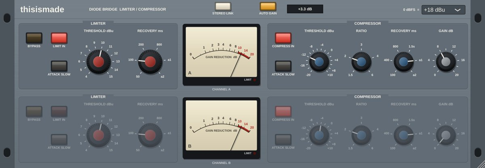

Stereo-Kompressor und Limiter mit Diodenbrücke als VST3, AU und Standalone, nach dem Vorbild des 33609. Alle Regler der Frontplatte, gerastet wie beim Original, dazu Auto Gain.

Rückgekoppelter Kompressor mit weichem Knie, Limiter und zwei Übertragern, alles mit zweifachem Oversampling. Auch mit ausgeschalteten Sektionen färbt das Plugin den Klang wie die Hardware; BYPASS nimmt alles heraus.
a1 und a2 regeln automatisch: kurze Spitzen erholen sich schnell, länger anhaltendes Material langsam.
Die fertigen Plugins baut GitHub bei jeder Änderung. Sie liegen als Artefakte am jeweiligen Build und lassen sich mit einem GitHub-Konto laden.
Unabhängige Nachbildung, nicht mit AMS Neve verbunden. „33609“ beschreibt nur die Hardware, die als Vorbild dient.
Pro Kanal A und B dieselben Regler wie an der Hardware, gerastet in deren Schritten.
LIMIT IN, Threshold +4 bis +15 dBu, Recovery 50 ms bis a2, Attack fast oder slow.
Threshold −20 bis +10 dBu, Ratio 1,5:1 bis 6:1, Recovery bis a2, Gain 0 bis 20 dB.
Jeder Regler rastet in den Schritten der Hardware ein, pro Kanal A und B.
Gleicht die Ausgangslautheit über etwa 3 s an den Eingang an, für faire A/B-Vergleiche.
Koppelt beide Sidechains; Kanal A steuert dann beide Kanäle.
Gain-Reduction-Meter je Kanal mit Nadelträgheit und LIMIT-LED.
| Messung | Hardware-Angabe | thisismade |
|---|---|---|
| Limiter, Sprung 10 → 20 dBu | < 0,1 dB Änderung | 0,10 dB |
| Attack Kompressor (fast) | 3 ms | 2,8 ms bis 90 % |
| THD, Sektionen aus, +9 dBu | < 0,075 % | 0,034 % |
| THD, 6:1, +20 dB Gain, Thr −18 | < 0,2 % | 0,11 % |
| THD, Limiter, hoher Pegel | < 0,45 % | 0,11 % |
| Ratio, 10 dB über Threshold | 1,5 / 2 / 3 / 4 / 6 | 1,50 / 2,00 / 3,03 / 4,01 / 6,03 |
Gemessen mit tests/dsp_test.cpp gegen die veröffentlichten Daten der Hardware.